Ren is an AI tool that helps managers have the conversations they keep putting off. It’s built on the Accountability Dial, a five-step method more than 100,000 managers have learned.
I’m the only PM. Our biggest customers said they couldn’t tell what Ren did, couldn’t explain it to their teams, and wanted it to do more without being asked. I redesigned the desktop and mobile app around those three things and designed every screen myself.
Problem
Ren’s features were hidden in boxes and tabs, so customers couldn’t see what it did or explain it to their teams.
Solution
I added the Dial to the live app, then redesigned Home, Team and the Dial around one stack of next steps, with privacy built in.
Results
81% of users opted in to the redesign and 75% of Ren’s suggestions are accepted. Designed in 4 weeks.
I shipped into the live app first
When I joined, the Dial wasn’t anywhere you could use it. Before redesigning anything, I added it to the live app and watched how customers used it.
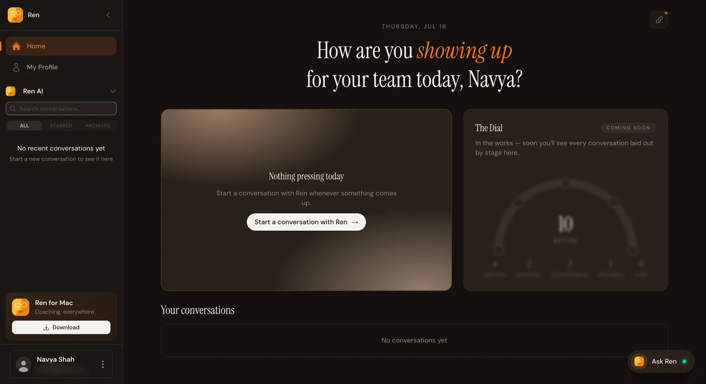
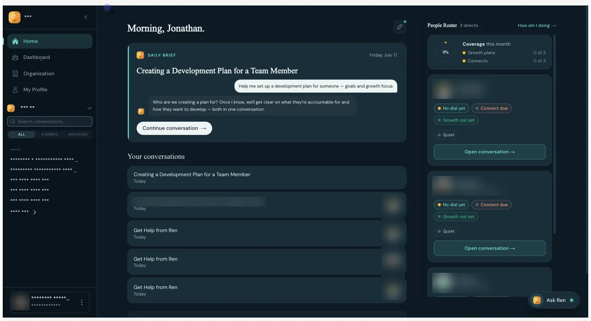
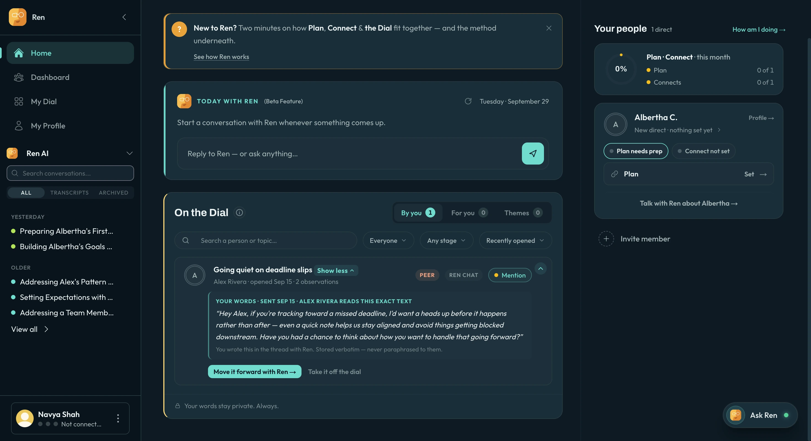
How do you make an AI coach useful without it feeling like surveillance?
Ren deals with how people are doing at work, so trust was the thing most likely to break. I interviewed three enterprise customers, including our largest, and leaned on:
- Customer interviews and how people used the Dial I shipped
- Four rules every screen had to follow: Ren suggests, a person decides; every card shows where it came from; nothing disappears without a record; anything personal is private by default
Managers couldn’t tell what needed them, so I turned Home into one stack
The old home was banners and three separate boxes. Now it’s one stack of cards that asks for one decision at a time, with the morning brief on top. Drag to compare.
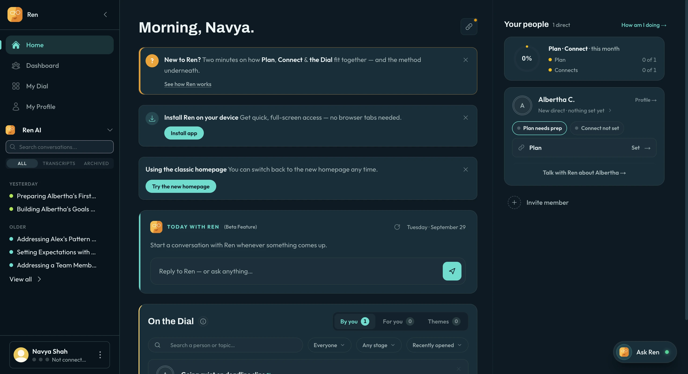
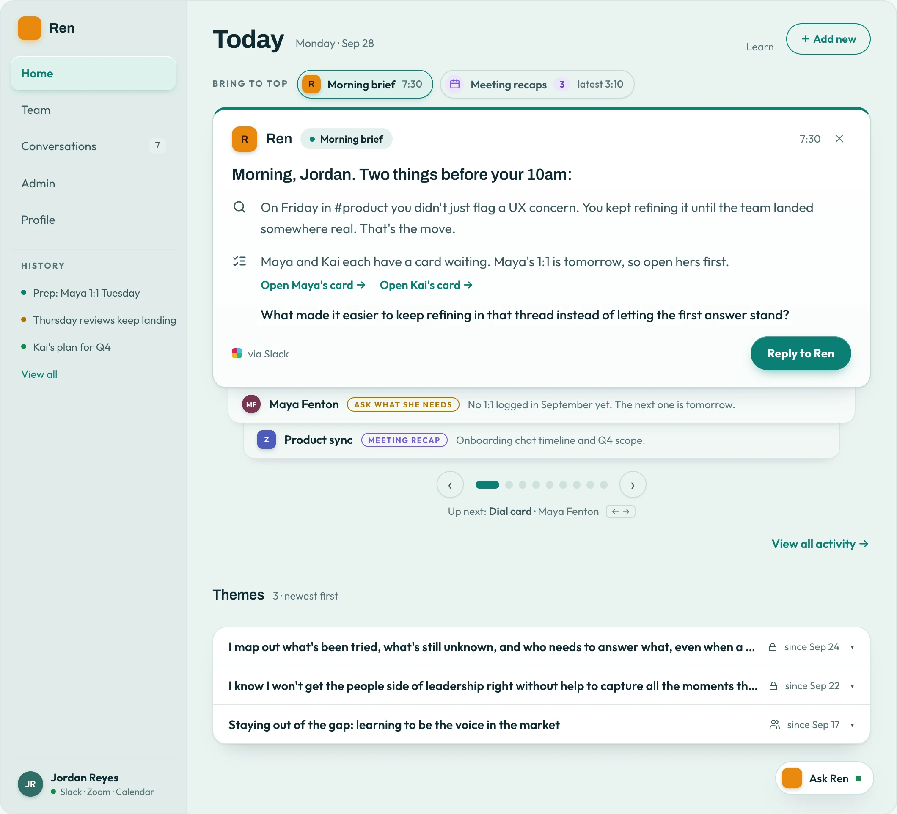
When a Zoom call ends, a recap lands in the stack with suggestions already drafted.
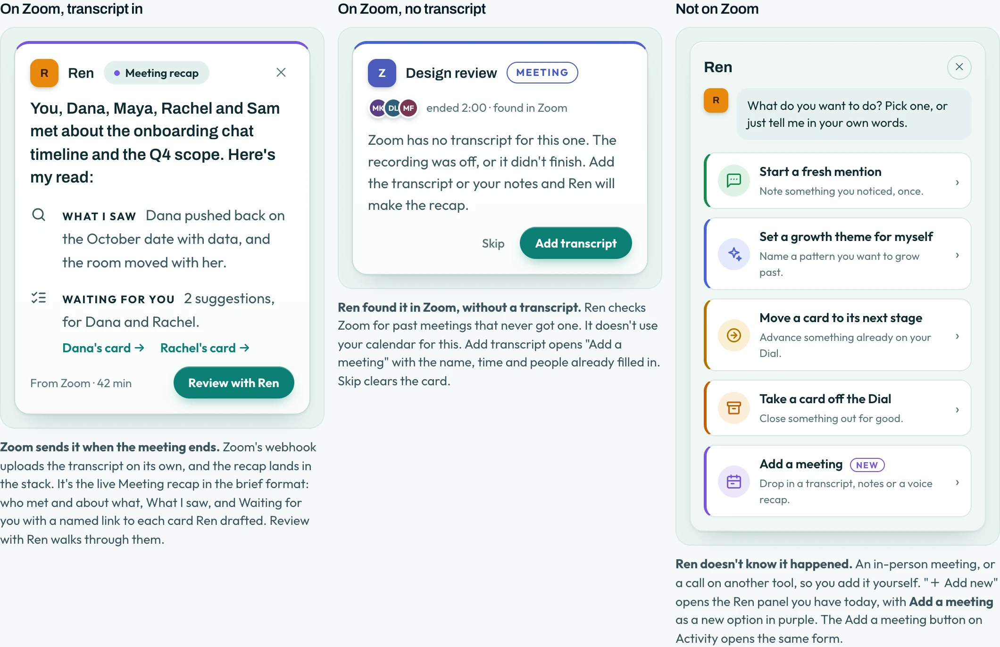
On day one there’s no data yet, so Ren talks first, based on what you’ve connected. Try it:
The Dashboard showed numbers, not people, so I built Team around next steps
Each person gets a tile with the next step on it, and every screen follows one privacy rule: plans and 1:1s are only between a manager and their direct report. Drag to compare, then pick a relationship below.
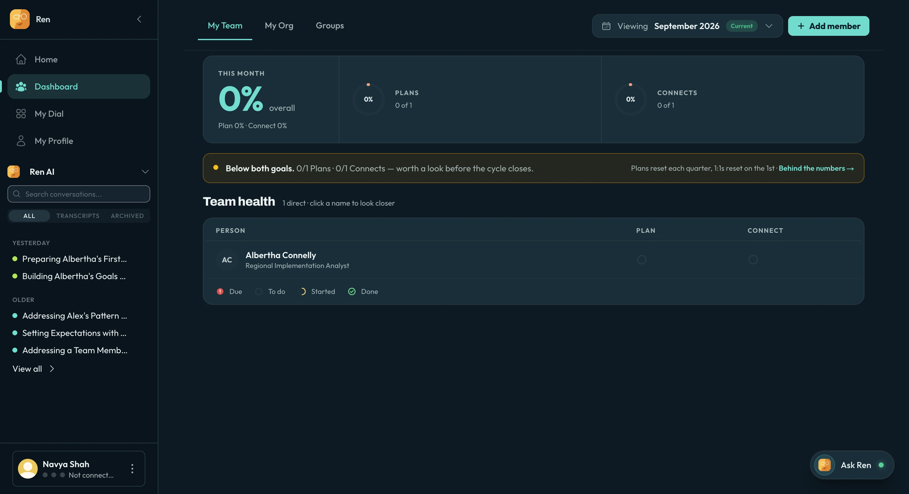
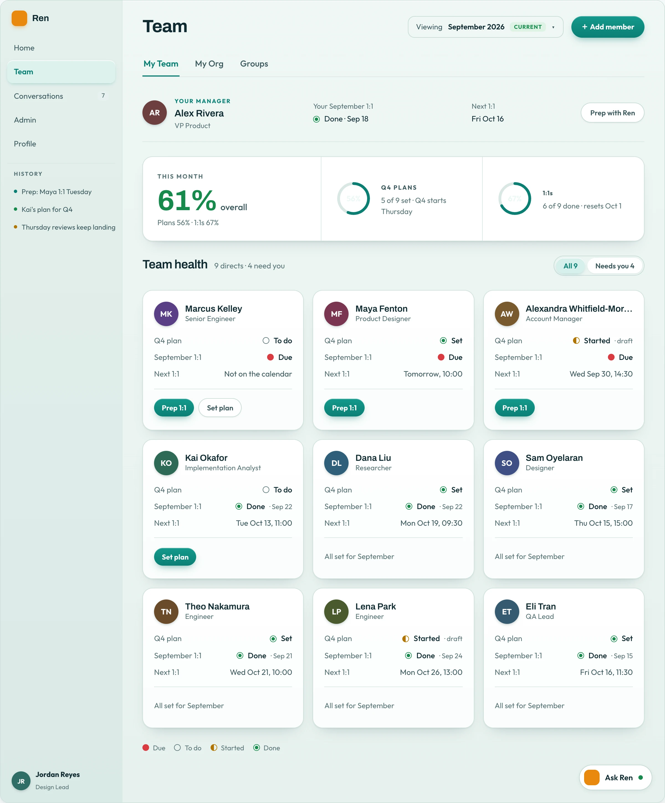
1:1 prep starts as a short conversation with Ren. Both people prep privately, and neither sees the other’s.
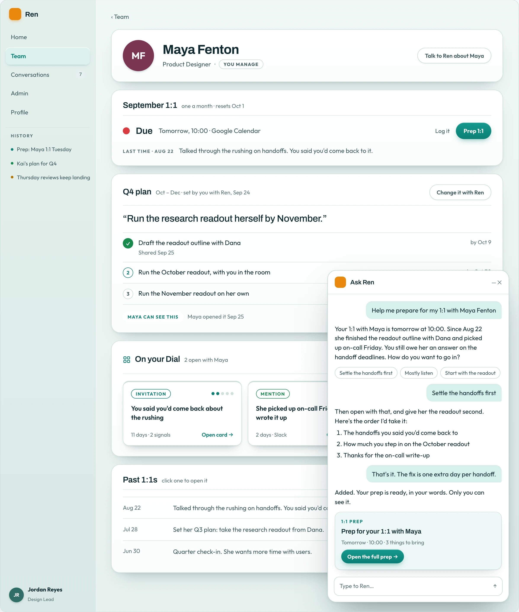
A method about progress lived in a list, so I made the Dial a board
Customers couldn’t see anything move in a list. On the board, each step is a column, Ren suggests moves, and the manager decides. Try it:
Our largest customer needed it private to each manager because of HR concerns. I built that as the same board with a different sharing rule, so everything we build reaches both.
Managers aren’t at their desks, so Ren went mobile and voice
Suggestion cards come first and you swipe them. Voice mode lets you talk to Ren on the walk between meetings.
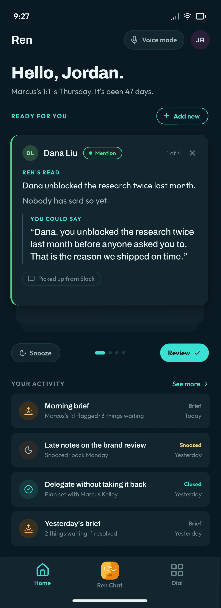
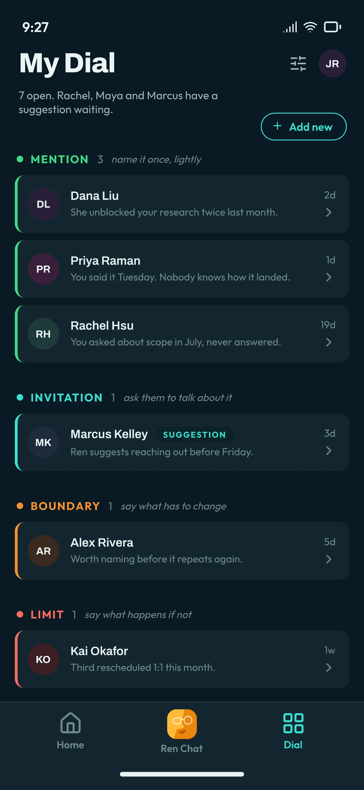
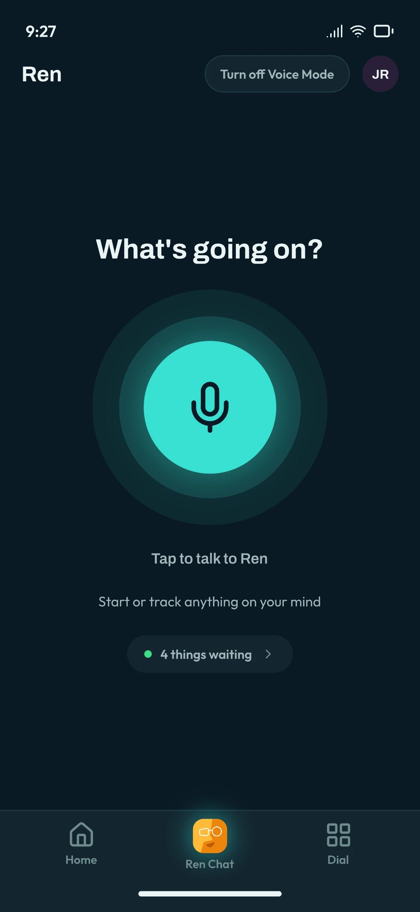
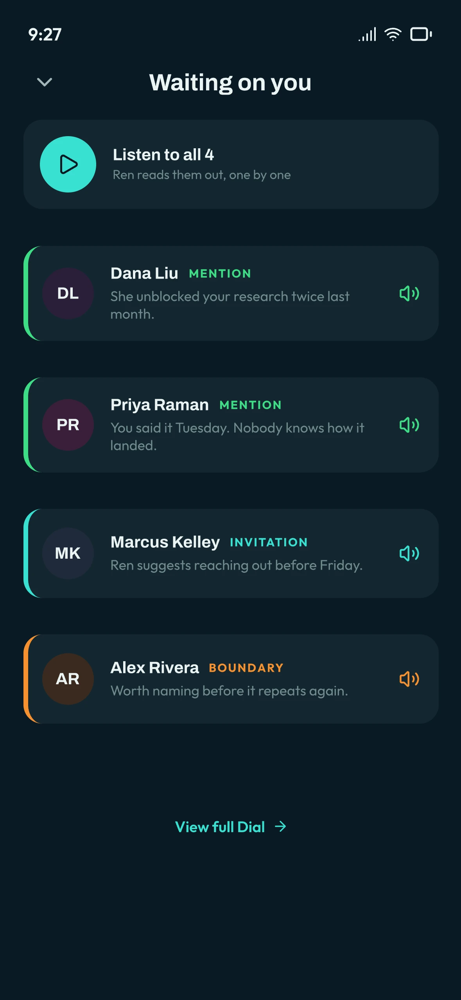
From a tab you open to an assistant that comes to you
I planned October to January around one manager’s Tuesday, so Ren reaches you in Slack and on your phone, and acts only within rules you set. Pick a moment and a date:
Customers chose it
Opted in
of existing users switched to the redesign, with a one-click way back.
Suggestions accepted
of what Ren suggests, managers act on.
Designed
from interviews to 50+ build-ready screens.